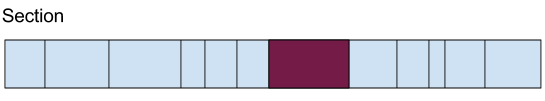
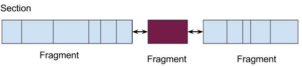

In this article I want to present a cool and little-known feature of assemblers called "relaxation". Relaxation is cool because it's one of those things that are apparent in hindsight ("of course this should be done"), but is non-trivial to implement and has some interesting algorithms behind it. While relaxation is applicable to several CPU architectures and more than one kind of instructions, for this article I will focus on jumps for the Intel x86-64 architecture.
And just so the nomenclature is clear, an assembler is a tool that translates assembly language into machine code, and this process is also usually referred to as assembly. That's it, we're good to go.
An example
Consider this x86 assembly function (in GNU assembler syntax):
.text
.globl foo
.align 16, 0x90
.type foo, @function
foo:
# Save used registers
pushq %rbp
pushq %r14
pushq %rbx
movl %edi, %ebx
callq bar # eax <- bar(num)
movl %eax, %r14d # r14 <- bar(num)
imull $17, %ebx, %ebp # ebp <- num * 17
movl %ebx, %edi
callq bar # eax <- bar(num)
cmpl %r14d, %ebp # if !(t1 > bar(num))
jle .L_ELSE # (*) jump to return num * bar(num)
addl %ebp, %eax # eax <- compute num * bar(num)
jmp .L_RET # (*) and jump to return it
.L_ELSE:
imull %ebx, %eax
.L_RET:
# Restore used registers and return
popq %rbx
popq %r14
popq %rbp
ret
It was created by compiling the following C program with gcc -S -O2, cleaning up the output and adding some comments:
extern int bar(int);
int foo(int num) {
int t1 = num * 17;
if (t1 > bar(num))
return t1 + bar(num);
return num * bar(num);
}
This is a completely arbitrary piece of code crafted for purposes of demonstration, so don't look too much into it. With the comments added, the relation between this code and the assembly above should be obvious.
What we're interested in here is the translation of the jumps in the assembly code above (marked with (*)) into machine code. This can be easily done by first assembling the file:
$ gcc -c test.s
And then looking at the machine code (the jumps are once again marked):
$ objdump -d test.o
test.o: file format elf64-x86-64
Disassembly of section .text:
0000000000000000 <foo>:
0: 55 push %rbp
1: 41 56 push %r14
3: 53 push %rbx
4: 89 fb mov %edi,%ebx
6: e8 00 00 00 00 callq b <foo+0xb>
b: 41 89 c6 mov %eax,%r14d
e: 6b eb 11 imul $0x11,%ebx,%ebp
11: 89 df mov %ebx,%edi
13: e8 00 00 00 00 callq 18 <foo+0x18>
18: 44 39 f5 cmp %r14d,%ebp
1b: 7e 04 jle 21 <foo+0x21> (*)
1d: 01 e8 add %ebp,%eax
1f: eb 03 jmp 24 <foo+0x24> (*)
21: 0f af c3 imul %ebx,%eax
24: 5b pop %rbx
25: 41 5e pop %r14
27: 5d pop %rbp
28: c3 retq
Note the instructions used for the jumping. For the JLE, the opcode is 0x7e, which means "jump if less-or-equal with a 8-bit PC-relative offset". The offset is 0x04 which jumps to the expected place. Similarly for the JMP, the opcode 0xeb means "jump with a 8-bit PC-relative offset".
Here comes the crux. 8-bit PC-relative offsets are enough to reach the destinations of the jumps in this example, but what if they weren't? This is where relaxation comes into play.
Relaxation
Relaxation is the process in which the assembler replaces certain instructions with other instructions, or picks certain encodings for instructions that would allow it to successfully assemble the the machine code.
To see this in action, let's continue with our example, adding a twist that will make the assembler's life harder. Let's make sure that the targets of the jumps are too far to reach with a 8-bit PC-relative offset:
[... same as before]
jle .L_ELSE # jump to return num * bar(num)
addl %ebp, %eax # eax <- compute num * bar(num)
jmp .L_RET # and jump to return it
.fill 130, 1, 0x90 # ++ added
.L_ELSE:
imull %ebx, %eax
.L_RET:
[... same as before]
This is an excerpt of the assembly code with a directive added to insert a long stretch of NOPs between the jumps and their targets. The stretch is long enough so that the targets are more than 128 bytes away from the jumps referring to them [1].
When this code is assembled, here's we get from objdump when looking at the resulting machine code:
[... same as before]
1b: 0f 8e 89 00 00 00 jle aa <foo+0xaa>
21: 01 e8 add %ebp,%eax
23: e9 85 00 00 00 jmpq ad <foo+0xad>
28: 90 nop
29: 90 nop
[... many more NOPs]
a8: 90 nop
a9: 90 nop
aa: 0f af c3 imul %ebx,%eax
ad: 5b pop %rbx
ae: 41 5e pop %r14
b0: 5d pop %rbp
b1: c3 retq
The jumps were now translated to different instruction opcodes. JLE uses 0x0f 0x8e, which has a 32-bit PC-relative offset. JMP uses 0xe9, which has a similar operand. These instructions have a much larger range that can now reach their targets, but they are less efficient. Since they are longer, the CPU has to read more data from memory in order to execute them. In addition, they make the code larger, which can also have a negative impact because instruction caching is very important for performance [2].
Iterating relaxation
From this point on I'm going to discuss some aspects of implementing relaxation in an assembler. Specifically, the LLVM assembler. Clang/LLVM has been usable as an industrial-strength compiler for some time now, and its assembler (based on the MC module) is an integral part of the compilation process. The assembler can be invoked directly either by calling the llvm-mc tool, or through the clang driver (similarly to the gcc driver). My description here applies to LLVM version 3.2 or thereabouts.
To better understand the challenges involved in performing relaxation, here is a more interesting example. Consider this assembly code [3]:
.text
jmp AAA
jmp BBB
.fill 124, 1, 0x90 # FILL_TO_AAA
AAA:
.fill 1, 1, 0x90 # FILL_TO_BBB
BBB:
ret
Since by now we know that the short form of JMP (the one with a 8-bit immediate) is 2 bytes long, it's clear that it suffices for both JMP instructions, and no relaxation will be performed.
0: eb 7e jmp 80 <AAA>
2: eb 7d jmp 81 <BBB>
[... many NOPs]
0000000000000080 <AAA>:
80: 90 nop
0000000000000081 <BBB>:
81: c3 retq
If we increase FILL_TO_BBB to 4, however, an interesting happens. Although AAA is still in the range of the fist jump, BBB will no longer be in the range of the second. This means that the second jump will be relaxed. But this will make it 5, instead of 2 bytes long. This event, in turn, will cause AAA to become too far from the first jump, which will have to be relaxed as well.
To solve this problem, the relaxation implemented in LLVM uses an iterative algorithm. The layout is performed multiple times as long as changes still happen. If a relaxation caused some instruction encoding to change, it means that other instructions may have become invalid (just as the example shows). So relaxation will be performed again, until its run doesn't change anything. At that point we can confidently say that all offsets are valid and no more relaxation is needed.
The output is then as expected:
0000000000000000 <AAA-0x86>:
0: e9 81 00 00 00 jmpq 86 <AAA>
5: e9 80 00 00 00 jmpq 8a <BBB>
[... many NOPs]
0000000000000086 <AAA>:
86: 90 nop
87: 90 nop
88: 90 nop
89: 90 nop
000000000000008a <BBB>:
8a: c3 retq
Contrary to the first example in this article, here relaxation needed two iterations over the text section to finish, due to the reason presented above.
Laying-out fragments
Another interesting feature of LLVM's relaxation implementation is the way object file layout is done to support relaxation efficiently.
In its final form, the object file consists of sections - chunks of data. Much of this data is encoded instructions, which is the kind we're most interested here because relaxation only applies to instructions. The most common way to represent chunks of data in programming is usually with some kind of byte arrays [4]. This representation, however, would not work very well for representing machine code sections with relaxable instructions. Let's see why:
Suppose this is a text section with several instructions (marked by line boundaries). The instructions were encoded into a byte array and now relaxation should happen. The instruction painted purple requires relaxation, growing by a few bytes. What happens next?
Essentially, the byte array holding the instruction has to be re-allocated because it has to grow larger. Since the amount of instructions needing relaxation may be non-trivial, a lot of time may be spent on such re-allocations, which tend to be very expensive. In addition, it's not easy to avoid multiple re-allocations due to the iterative nature of the relaxation algorithm.
A solution that immediately springs to mind in light of this problem is to keep the instructions in some kind of linked list, instead of a contiguous array. This way, an instruction being relaxed only means the re-allocation of the small array it was encoded into, but not of the whole section. LLVM MC takes a somewhat more clever approach, by recognizing that a lot of data in the array won't change once initially encoded. Therefore, it can be lumped together, leaving only the relaxable instructions separate. In MC nomenclature, these lumps are called "fragments".
So, the assembly emission process in LLVM MC has three distinct steps:
- Assembly directives and instructions are parsed, encoded and collected into fragments. Data and instructions that don't need relaxation are placed into contiguous "data" fragments, while instructions that may need relaxation are placed into "instruction" fragments [5]. Fragments are linked together in a list.
- Layout is performed. Layout is the process wherein the offsets of all fragments in a section are computed and relaxation is performed (iteratively). If some instruction gets relaxed, all that's required is to update the offsets of the subsequent fragments - no re-allocations.
- Finally, fragments are written into a single linear buffer for object-file emission (either into memory or into a file). At this step, all instructions have final sizes so it's safe to put them consecutively into a byte array.
Interaction with the compiler
So far I've focused on the assembly part of the compilation process. But what about the compiler that emits these instructions in the first place? Once again, this interaction is highly dependent on the implementation, and I will focus on LLVM.
The LLVM code generator doesn't yet know the addresses instructions and labels will land on (this is the task of the assembler), so it emits only the short versions for x86-64 jumps, relying on the assembler to do relaxation for those instructions that don't have a sufficient range. This ensures that the amount of relaxed instructions is as small as absolutely necessary.
While the relaxation process is not free, it's a worthwhile optimization since it makes the code smaller and faster. Without this step, the compiler would have to assume no jump is close enough to its target and emit the long versions, which would make the generated code less than optimal.
Compiler writers usually prefer to sacrifice compilation time for the efficiency of the resulting code. However, as different tradeoffs sometimes matter for programmers, this can be configured with compiler flags. For example, when compiling with -O0, the LLVM assembler simply relaxes all jumps it encounters on first sight. This allows it to put all instructions immediately into data fragments, which ensures there's much fewer fragments overall, so the assembly process is faster and consumes less memory.
Conclusion
The main goal of this article was to document relaxation - an important feature of assemblers which doesn't have too much written about it online. As a bonus, some high-level documentation of the way relaxation is implemented in the LLVM assembler (MC module) was provided. I hope it provides enough background to dive into the relevant sections of code inside MC and understand the smaller details.

| [1] | The PC-relative offset is signed, making its range +/- 7 bits. |
| [2] | Incidentally, these instructions also have variations that accept 16-bit PC-relative immediates, but these are only available in 32-bit mode, while I'm building and running the programs in 64-bit mode. |
| [3] | In which I give up all attempts to resemble something generated from a real program, leaving just the bare essentials required to present the issue. |
| [4] | LLVM, like any self-respecting C++ project has its own abstraction for this called SmallVector, that heaps a few layers of full-of-template-goodness classes on top; yet it's still an array of bytes underneath. |
| [5] | Reality is somewhat more complex, and MC has special fragments for alignment and data fill assembly directives, but for the sake of this discussion I'll just focus on data and instruction fragments. In addition, I have to admit that "instruction" fragments have a misleading name (since data fragments also contain encoded instructions). Perhaps "relaxable fragment" would be more self-describing. Update: I've renamed this fragment to MCRelaxableFragment in LLVM trunk. |